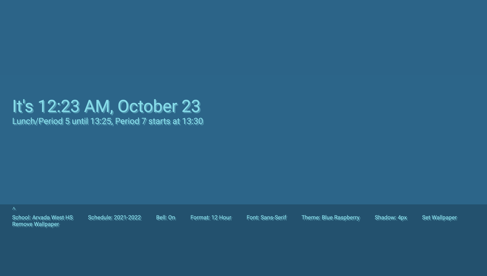
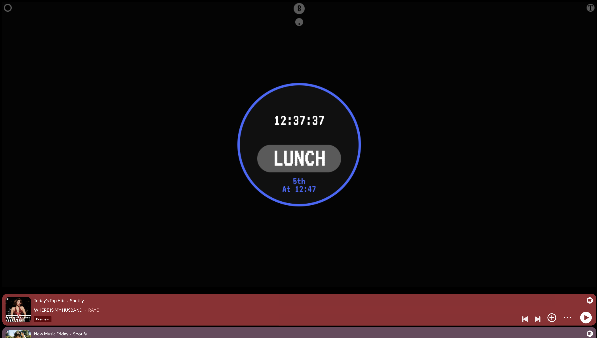
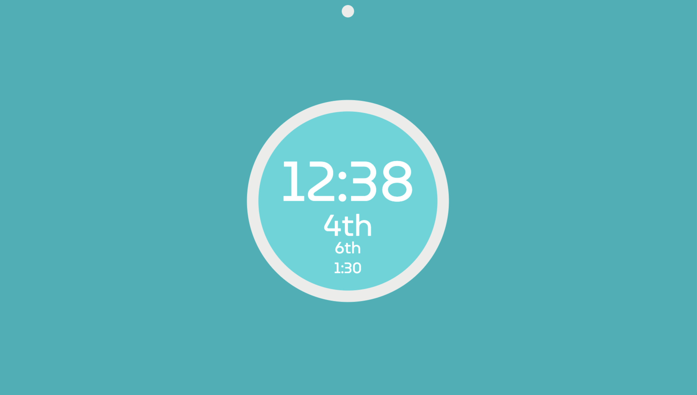

This is one of my earlier projects. In middle school, I realized that lots of students would ask "How long until class gets out?" or "What period is next?"
Inspiration
In my programming class, another student had also noticed that. They designed a website that told you all that info - The current time, next class, and time left in the current one.
There was just one problem - it wasn't very pretty. It was exactly what a programmer would make: Small, in the corner, and black and white.
Right to work
I took it upon myself to make a better version. Yes, mine did look much better, and it worked!

But it was a little over my head. You see, I hadn't learned about loops or arrays yet. So I spend my entire weekend manually typing hundreds of if-statements.
With that being said, it was a start. The best way to learn is to get in over your head. And over time, I improved it, using dictionaries, functions, and CSS.

I later added features like music, styles, other schools, and wallpapers. You can see the latest version, which I made in high school, at
class-clock.github.io
That's all.
Get in touch!


 Witte's Workbench
Witte's Workbench